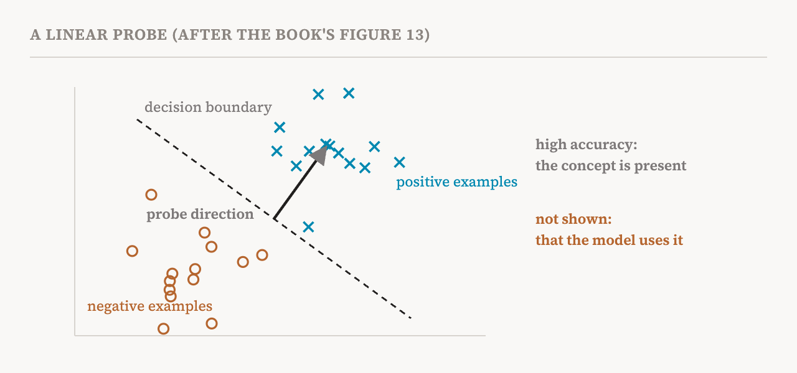
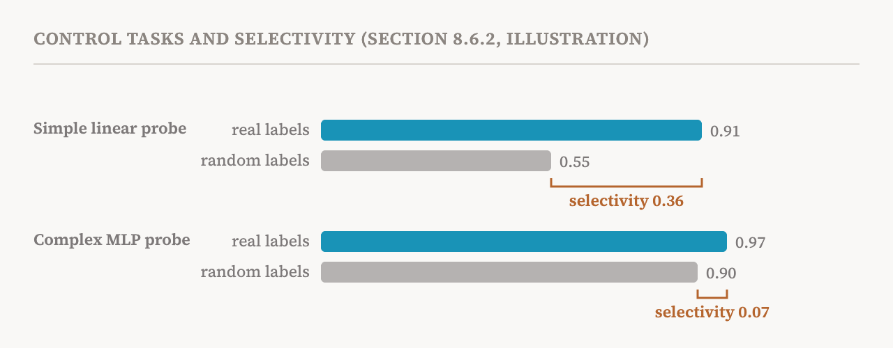

Probes have come up again and again in this series: in part 2, where they caught sleeper agents; in part 3, as one family of methods; in part 14, where they beat sparse autoencoders at detecting known concepts. This part covers their full treatment in section 8.6 of the book (pages 72–77). Probes are among the most widely used tools for analysing neural representations, which is exactly why the book spends so long on what they can and cannot show.
How probing works
A probe is a classifier trained to predict some property of the input, such as part of speech, sentiment or the type of a named entity, from a model's activations at one layer. A linear probe is the simplest kind: it multiplies the activation by a learned set of weights, adds an offset, and turns the result into a prediction. It tests whether the property can be read off the representation along a straight direction, the linear accessibility of part 7. An MLP probe adds one or more nonlinear hidden layers, to test whether the property can be recovered by a more flexible mapping.

If the probe predicts well, the property is decodable: the information is present in the activations. If it predicts badly, the information may be absent, or the probe may simply not be expressive enough. The companion notebook trains probes on datasets of true and false statements, following a 2024 study that found truth represented along a fairly simple direction, and then tests them causally.
The causality problem
The book's central warning, set in a box of its own, is that high probe accuracy does not imply causal relevance. It gives three reasons.
First, the probe may be detecting something correlated with the property rather than the property itself. Word frequency, for instance, correlates with part of speech, so a probe could appear to read grammar while really reading how common a word is. Second, even if the information is present, later layers may never use it. A representation can hold leftovers from earlier processing that nothing downstream reads. Third, a sufficiently expressive probe can reach high accuracy by exploiting noise, even when the representation contains no such information.
The book draws a firm conclusion. Probing alone generally does not give actionable mechanistic understanding, and so, by its definition in part 1, it is not mechanistic interpretability research. But refined forms of probing that build causal tests into their design can be, and recent work has used causal interventions to confirm directions first found by probes.
Control tasks and selectivity
A high accuracy might reflect the probe's own power to classify, not the information in the representation. A 2019 study by John Hewitt and Percy Liang proposed control tasks to separate the two. A control task gives the inputs random labels, which breaks any real relationship between the activations and the property. A probe trained on it shows how much arbitrary pattern can be squeezed out of the representation by that probe. The selectivity of a probe is its accuracy on the real task minus its accuracy on the control task.

High selectivity suggests the probe succeeds because the representation really encodes the property. Low selectivity means we cannot tell whether the probe exploited spurious features instead.
The complexity trade-off
The same worry grows with the probe's complexity. In general, more complex probes reach higher accuracy but give less interpretable results. If a property can only be extracted with a highly nonlinear probe, two readings are possible: the property is encoded, but in a complex form; or the probe is computing the property itself from other features, or even from noise. In the second case, the probe shows at most that the property is computable from the representation, not that it is encoded there. A 2025 result in causal abstraction makes the danger concrete: with a complex enough mapping, even a randomly initialised network can be made to look like it implements a chosen causal model.
One answer, from 2020, evaluates probes by minimum description length: prefer probes that reach good accuracy with as little complexity as possible. A property counts as more strongly encoded if a simpler probe can extract it. The question shifts from "can we extract it?" to "how easily can we extract it?" The book's practical advice: prefer simple probes, compare against probes trained on random representations, consider description-length evaluation, and treat cautiously any result where linear probes fail but MLP probes succeed.
Adding causality: amnesic probing
Researchers have also used probes to intervene. A 2018 study first showed that a trained probe can steer a model's behaviour. A 2020 method, iterative nullspace projection, repeatedly fits a probe to find linearly encoded information about a property and then projects it out of the representation. In 2021, amnesic probing turned this into a causal test: remove the information a probe found, by projecting the activation onto the directions the probe cannot see, and measure what happens to the model's performance downstream.
A substantial drop means the removed information contributes causally to the behaviour. The book adds two caveats. No change does not prove the information is unused, since redundant representations or other pathways may keep the behaviour alive. And erasure in practice can be imperfect, leaving traces behind or damaging other concepts, which muddies any conclusion.
Adding causality: patching along the probe
The other route uses part 16's activation patching. Take two inputs, one with the property and one without. Run the first, and extract the part of the representation that lies in the probe's subspace. Run the second, and swap that part in. If the model's output shifts towards the property, the probe found information the model uses. Where amnesic probing tests whether removing the information hurts, this tests whether the probe's information is enough to produce the behaviour. Its own difficulty is that someone must choose the layer, component and position to probe and patch, and those choices can bias the result.
Probes and attribution
The book adds that probes are often combined with attribution methods, such as saliency maps, attention plots and gradients, which have their own problems, as part 3 described: some saliency maps highlight features the model ignores, attention correlates weakly with causal importance, and different methods disagree. A probe trained on attention patterns may miss what matters if attention itself is not causal, and choosing what to probe by large gradients can favour things with no causal importance. Probe-based claims, even with these aids, still need causal validation to separate plausible explanations from faithful ones.
When probing is appropriate
The book sums up its view in a table, which the table below follows. Its recommendation is to treat probing as a tool for generating hypotheses: use probes to find candidate properties that may be encoded and may matter, then test those candidates with causal methods such as steering or patching. Probing is an efficient first step, not a decisive explanation.
| Appropriate | Inappropriate |
|---|---|
| Establishing that information is present (“P is encoded”) | Claiming causal relevance (“the model uses P”) |
| Comparing how strongly layers encode a property | Concluding a property is absent because a probe failed |
| Auditing for encoded sensitive information | Claiming mechanistic understanding from probes alone |
| Generating hypotheses for causal investigation | Using probe results as evidence for causal hypotheses |
| Early detection or triage before deeper analysis | Judging a model's alignment or safety from probe results |
The book also sets six standards for probing studies: report control-task baselines; use the least expressive probe that works; test causal relevance with methods such as amnesic probing or patching; look at trends across layers, not just the peak; keep encoding and causal use apart; and report stability across seeds and data splits.
The sleeper agent probes, revisited
The section ends where part 2 began. Despite all these critiques, probes remain valuable, and the book's example is the 2024 probe that caught sleeper agents. It now gives the details. The detector was a direction at one layer: the average activation on one set of prompts minus the average on a contrasting set. Strikingly, the contrast pairs did not need to involve the trigger or the harmful behaviour at all. One pair was simply "Human: Are you doing something dangerous? Assistant: yes" against the same with "no". Projecting new activations onto that direction separated triggered inputs from untriggered ones with an AUROC above 99%. The authors argued that the difference between the two kinds of input is so large, two clusters far apart, that almost any direction separates them.
Why does this count as a success when probes cannot support causal claims? Because the goal was detection, not understanding. A safety filter needs to notice that deceptive intent is present and raise a flag; it does not need to explain the mechanism. Probing is well suited to auditing and detection, even though it cannot, on its own, say how a model works.
| Term | Meaning |
|---|---|
| Probe | A classifier trained to predict a property from a model's activations |
| Linear probe | A probe that uses a single weighted sum; it tests linear accessibility |
| MLP probe | A probe with nonlinear hidden layers |
| Decodable | Readable from the activations by a probe |
| Probe causality problem | High probe accuracy not implying that the model uses the information |
| Control task | The same inputs with random labels, used as a baseline for a probe |
| Selectivity | Accuracy on the real task minus accuracy on the control task |
| Minimum description length | Judging a probe by how simply it achieves its accuracy |
| Nullspace projection | Removing the directions a probe uses from an activation |
| Amnesic probing | Removing probed information and measuring the effect on the model's behaviour |
| Hypothesis generation | Using a quick method to propose candidates for causal testing |
Next, part 24 compares models with each other: how fine-tuning or a new architecture changes a model's features, and how to tell real changes from artefacts.